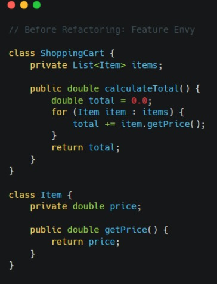
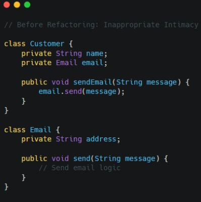
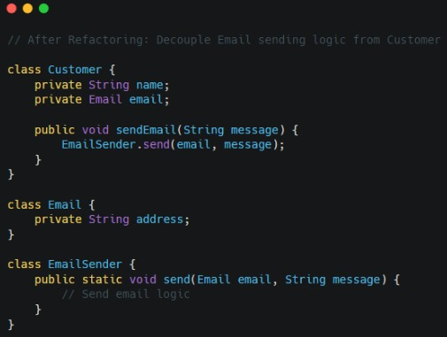
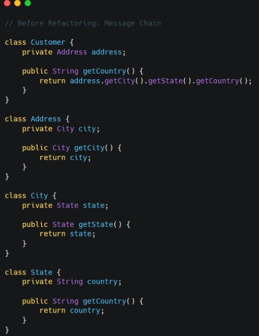
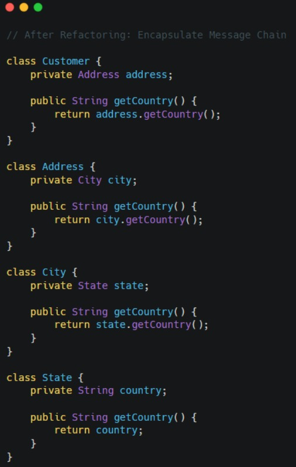
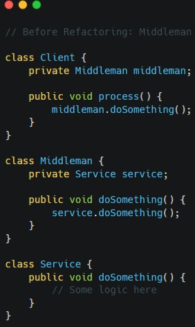
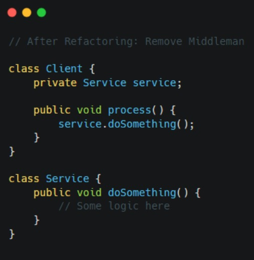
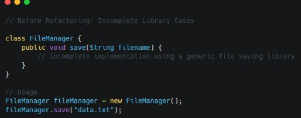
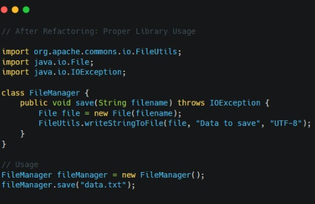

Bab 1: Feature Envy
Feature Envy is a code smell that occurs when a method in one class is more interested in the data of another class than in its own. In other words, a method seems to be "envious" of the features or data of another class. This typically indicates that the method should belong to the other class instead, as it is accessing its data or behavior more than its own. Refactoring to eliminate Feature Envy often involves moving the method to the class that owns the data it's working with, promoting better encapsulation and cohesion within the codebase.
In the refactored version, the 'calculatePrice()' method has been moved from the 'ShoppingCart' class to the 'Item' class. This way, the responsibility of calculating the price is shifted to the 'Item' class, which is more appropriate since the price is an attribute of an item. This eliminates the feature envy smell by reducing the dependency of 'ShoppingCart' on the 'Item' class's methods.

Bab 2: Inappropriate Intimacy
Inappropriate Intimacy is a code smell that occurs when two classes are excessively dependent on each other, resulting in tight coupling and decreased maintainability.
In the refactored version, the logic for sending emails has been decoupled from the 'Email' class and moved to a separate 'EmailSender' class. This eliminates the inappropriate intimacy between the 'Customer' and 'Email' classes, as the 'Customer' class no longer directly interacts with the 'Email' class's methods. Instead, it delegates the responsibility of sending emails to the 'EmailSender' class, promoting better encapsulation and separation of concerns.
 Bab 3: Message Chain
Message Chain is a code smell that occurs when a series of method calls are chained together across multiple objects. This often leads to tightly coupled code and reduces readability and maintainability. In the provided example, the 'Customer' class directly accesses methods of 'Address', 'City', and 'State', forming a message chain. By encapsulating the message chain within each class and providing a single method to retrieve the required information, we reduce the coupling between classes and improve code clarity and maintainability.
In the refactored version, the message chain has been encapsulated within each class. Instead of the 'Customer' class directly accessing methods from 'Address', 'City', and 'State', each class now exposes a method to get the country directly. This eliminates the message chain smell by reducing the dependency between classes and making the code more maintainable and easier to understand.
 Bab 4: Middleman
Middleman is a code smell that occurs when a class serves as a mere intermediary, delegating most of its functionality to another class without adding significant value. In the provided example, the 'Middleman' class merely delegates calls to the 'Service' class without adding any additional logic or functionality. By removing the middleman and allowing the 'Client' class to directly interact with the 'Service' class, we simplify the codebase and improve its clarity and maintainability. This refactoring eliminates unnecessary layers of indirection and promotes a more straightforward design.
In the refactored version, the 'Middleman' class has been eliminated, and the 'Client' class now directly interacts with the 'Service' class. This eliminates the middleman smell by removing unnecessary indirection and simplifying the codebase. The 'Client' class now communicates directly with the service it needs, promoting better clarity and maintainability.
 Bab 5: Incomplete Library Cases
Incomplete Library Cases is a code smell that occurs when developers attempt to implement functionality already provided by existing libraries, but either fail to fully utilize the library's capabilities or reinvent the wheel unnecessarily. In the provided example, the 'FileManager' class attempts to handle file saving operations without fully leveraging a dedicated library, resulting in incomplete or potentially error-prone implementations. By refactoring to utilize a proper library, such as Apache Commons IO, we ensure that the code is robust, complete, and benefits from the full capabilities of established and well-tested libraries. This eliminates the risk of incomplete or inadequate implementations and promotes more efficient and maintainable code.
In the refactored version, we've addressed the incomplete usage of a file saving library by utilizing a proper library (in this case, Apache Commons IO) to handle file saving operations. This eliminates the incomplete library cases smell by leveraging a well-tested and feature-rich library to perform the desired functionality, ensuring robustness and completeness in the codebase.
 